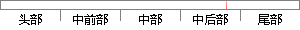

退出中断前，该函数会进行一次任务调度，如果没有更高优先级就绪的任务，那么会恢复被中断的任务接着运行，否则会去运行更高优先级就绪的任务，代码如下所示。
片段位置图

相似结果
1
原句片段：退出中断前，该函数会进行一次任务调度，如果没有更高优先级就绪的任务，那么会恢复
相似片段：为了合理地调度多任务、利用系统资源、系统函数以及和...在退出中断服务程序之前,首先应该将OSIntNesting减1;...如果没有更高优先级的任务,则恢复系统模式下保存的...
| 标题 | 《基于ARM和μC/OS-Ⅱ的嵌入式系统的研究与开发》 |
| 对比库 | 中国学位论文全文数据库 |
| 作者 | 周洁 |
| 机构 | 华东交通大学 |
| 分类 | 计算机应用技术 |
| 年份 | 2006 |
| 相似率 | 74.19% （轻度抄袭） |
2
原句片段：被中断的任务接着运行，否则会去运行更高优先级就绪的任务，代码如下所示。
相似片段：如果中断服务子程序使一个优先级更高的任务进入了就绪态,则新进入就绪态的这个优先级更高的任务将得以运行,否则原来被中断了的任务才能继续运行。 当所有的任务都...
| 标题 | 《ADI公司ADuC系列单片机内核任务的状态分析-花生漫画的博客China...》 |
| 对比库 | PaperRater云论文库 |
| 网址 | http://blog.chinaaet.com/detail/24854 |
| 相似率 | 65.52% （轻度抄袭） |
※ 片段修改建议 ※
近似词参考：- 恢复：规复
- 进行：举行
- 任务：使命 义务
- 那么：那末
- 调度：调剂 调理
- 如下：以下
- 就绪：停当
- 如果：若是 假如 要是
- 中断：间断 中止 停止
- 否则：不然
系统自动生成语句：退出间断前，该函数会举行一次使命调剂，若是没有更高优先级停当的使命，那末会规复被间断的使命接着运行，不然会去运行更高优先级停当的使命，代码以下所示。
注：本片段修改建议为系统自动生成，仅供参考。